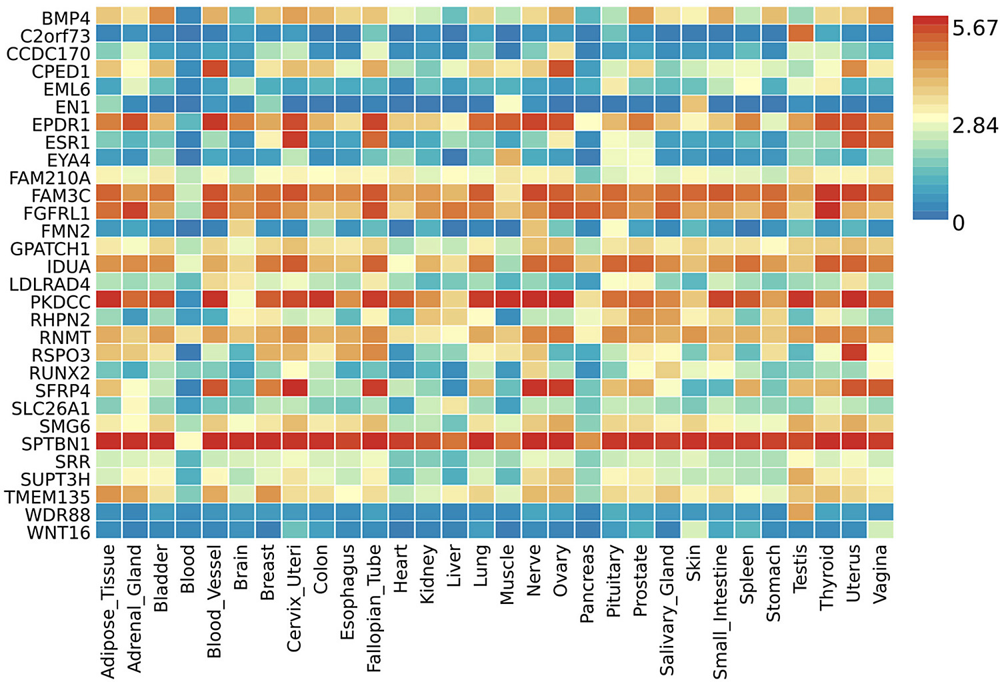
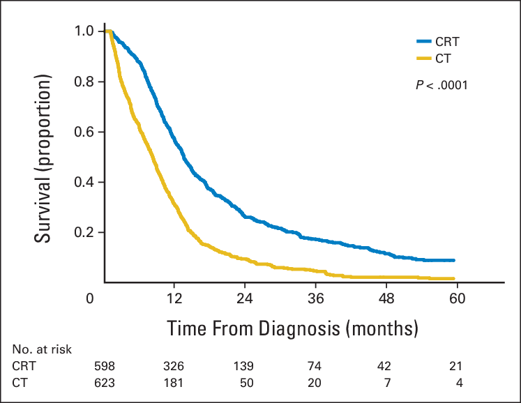
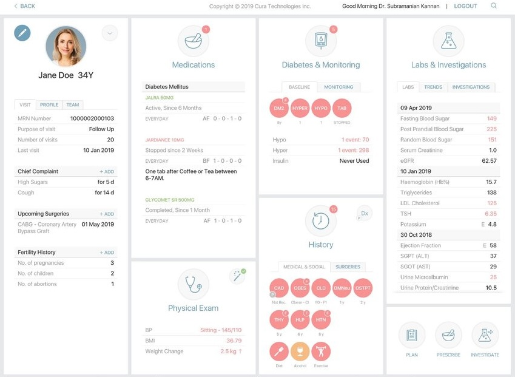
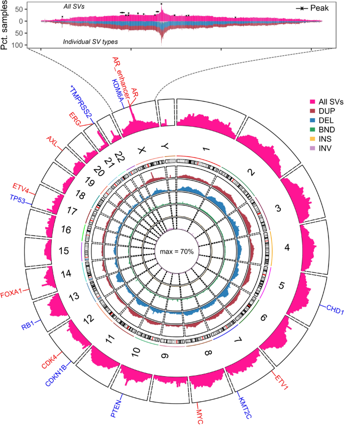
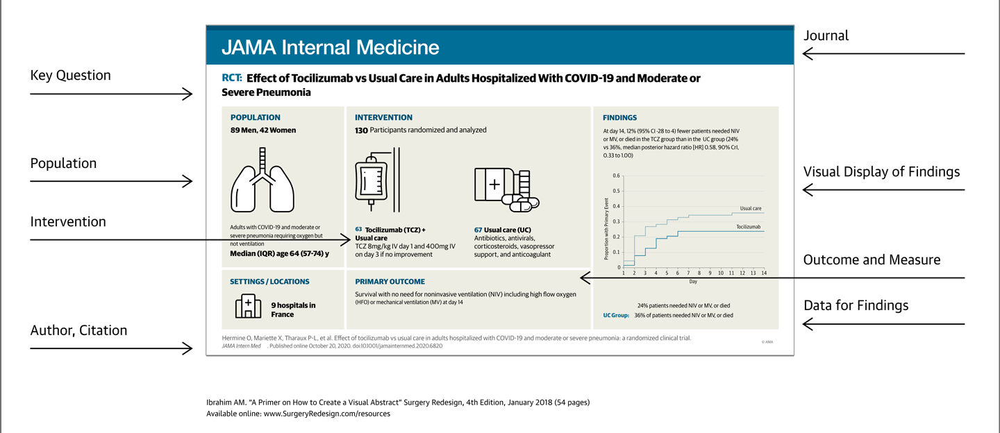
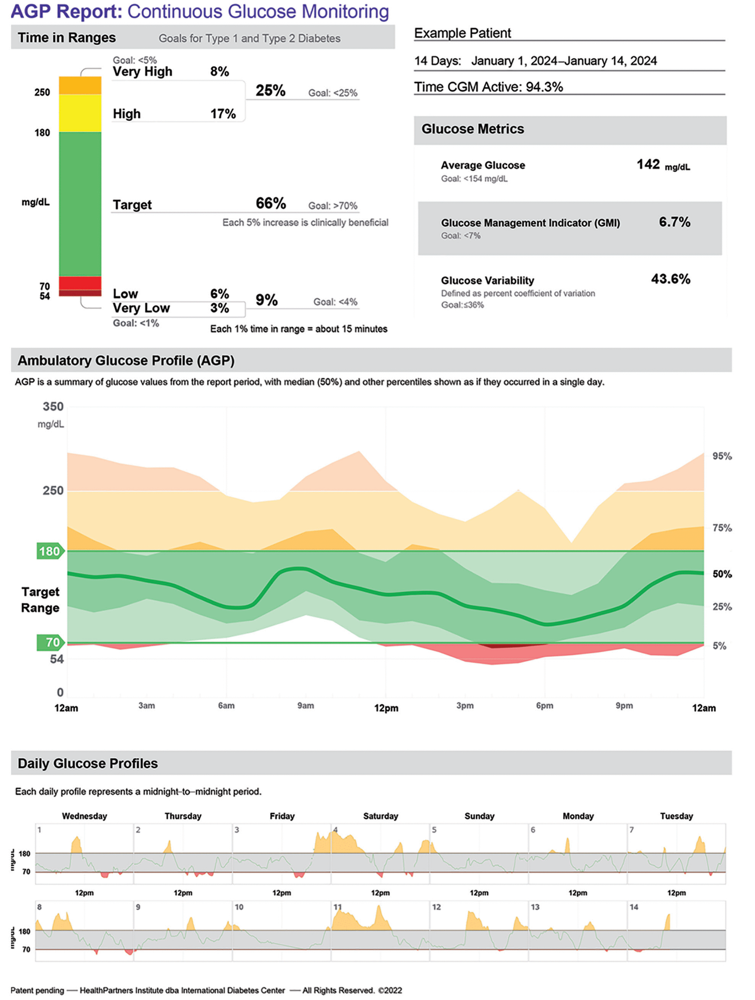

Powering clinical and biomedical insight through data visualization
Lesley Chapman Hannah, Ph.D., M.S.
College of Graduate Studies
Northeast Ohio Medical University
Why data visualization matters in biomedical and clinical research
- Simplifies complex dataset
- Reveals hidden insights
- Enables real-time monitoring
- Accelerates hypothesis generation
- Engages broader audiences
- Supports precision medicine
Simplifies complex dataset
- Biomedical research often produces multidimensional datasets—ranging from genomic sequencing outputs to large-scale clinical registries
- Visualization serves as a compression tool, distilling these high-dimensional datasets into interpretable forms
- It is estimated that by the end of 2025, genomics research will generate 2 to 40 exabytes of data annually\(^1\)
- One human whole-genome sequence alone consumes ~200 gigabytes (raw data) per individual\(^1\)
1.genome.gov
Simplifies complex dataset
GTEx Gene Expression heatmaps of gene activity
– Gene expresion across dozens of tissues
- red = genes more active
- blue = genes less active
Turns large amounts of raw genetic numbers into a simple color-coded picture of which genes “turn on” in different organs

Jung, J. et. al. (2024). Plos One.
Reveals hidden insights
Patterns that remain opaque in raw tables can emerge once data are visualized
Visualization doesn’t merely summarize data—it surfaces latent structures
Example: Kaplan–Meier survival curves reveal divergence in patient outcomes over time
- Enables investigators to assess therapeutic benefit or harm with immediacy
Reveals hidden insights
Kaplan–Meier survival curves comparing overall survival of elderly patients with limited-stage small-cell lung cancer who received:
- chemoradiotherapy (CRT)
- chemotherapy (CT) alone
Chemoradiotherapy improves survival in elderly patients with limited-stage small-cell lung cancer

Corso, C. et. al. Journal of Clinical Oncology(2015)
Enables Real-Time Monitoring
- Visualization acts as a temporal bridge between raw data and actionable intervention
- In clinical research and translational, visualization underpins decision-making through continuous monitoring
- Example: dashboards provide dynamic visual outputs of physiologic parameters—arterial blood pressure, oxygen saturation, and cardiac rhythm
- Dashboards provide clinicians with up-to-date information, enabling timely interventions
- Consolidate various data sources, offering a comprehensive view of patient health
- Visual representations of data assist in making informed clinical decisions
Enables Real-Time Monitoring
- Displays patient data related to diabetes
- Data includes clinical and laboratory results, complications, and co-morbidities
- Collectively these data could support clinical decision-making

Kannan, S., et. al. Journal of Diabetes Science and Technology. (2019)
Accelerates Hypothesis Generation
- Data visualization is not just a tool for summarizing data, strategy used to generate new ideas
- Scientific progress hinges on asking the right questions and these questions often emerge when patterns are visible
- Data visualization acts as a catalyst for this process
- Raw datasets (i.e.: genomic sequences and neuroimaging scans) are large and multidimensional, patterns buried in numbers are easy to miss
- Visualization transforms these data into an accessible form, revealing relationships, trends, or anomalies that could inform new hypotheses
Accelerates Hypothesis Generation
- Automated tool that integrates various genomic data types—such as large genomic variants (structural variants [SVs]), gene expression, copy number alterations, and genome annotations—to identify, annotate, and visualize recurrent SVs and their targeted hotspot regions
- Allows researchs to identify SVs associated with changes in gene expression, particularly in the context of prostate cancer
- These genomic regions of interest could affect gene expression and are associated with cancer progression

Eteleeb, A.M., et. al. Nature Scientific Reports. (2020)
Engages broader audiences
- Biomedical findings must be communicated beyond specialized subfields to stakeholders such as clinicians, policymakers, and the public
- Effective visualization enables rapid identification of key outcomes
- Makes complex research understandable to key stakeholders
- Data visuals have the potential to broaden the impact and uptake of biomedical research
Engages broader audiences
- Visualizations make it easier to share findings in publications, presentations, and public health communications
- Visual abstract in research articles helps broader audiences (clinicians, students, public) grasp key points quickly
- Not everyone is a scientist—but science can impact everyone, and data visuals help bridge that gap
Engages broader audiences
- Visual abstract that summazies a complex RCT
- Research Aim: Determine the effect of a monoclonal antibody drug versus usual care in hospitalized COVID-19 patients with moderate/severe pneumonia
- Population: Study group (130 participants, 89 men and 42 women, median age 64)
- Intervention: Intervention group (monoclonal antibody + usual care) versus control group (usual care only)
- Primary Outcome: The group that received the monoclonal antibody + usual care led to better survival without needing advanced respiratory support

Ibrahim , A.M., et. al. JAMA.(2018)
Supports Precision Medicine
Visualization in biomedical research performs two critical functions:
Integration: Brings together heterogeneous data streams (genomics, biomarkers, clinical measures, lifestyle data)
Translation: Converts those data into formats that clinicians and patients can interpret and use in real time
For instance, cancer and diabetes are complex diseases - even within a single patient, biology changes over time
- Visualization provides the scaffolding that allows us to see this heterogeneity and act upon it
Supports Precision Medicine
Ambulatory Glucose Profile (AGP) Report: a summary dashboard of continuous glucose monitoring (CGM) data
- Dashboard summary of a patient’s glucose control over time
- Daily glucose curves (individual day traces overlapped)
- Graphical representation to accompany Continuous Glucose Monitor
- Can inform individual patients on lifestyle changes and insulin regimine

Martens, TW. Cleveland Clnic Journal of Medicine.(2024)
Supports Precision Medicine
Meaning for Precision Medicine
- Personalized Monitoring Rather Than Population Averages
- Pattern Recognition & Risk Stratification
- Adaptive Feedback & Adjustment
- Inform data that can be integrated in monitoring device that could help improve future care
Martens, TW. Cleveland Clnic Journal of Medicine.(2024)
Summary
Simplify Complexity
- Turn high-dimensional biomedical datasets (genomics, registries, EHRs) into interpretable visuals that aid decision-making
Reveal Hidden Insights
- Use visuals (e.g., Kaplan–Meier survival curves) to uncover patterns in outcomes and treatment effects not visible in raw tables
Enable Real-Time Monitoring
- Build dashboards that integrate physiologic and clinical data streams, supporting rapid intervention in hospital and clinical settings
Accelerate Hypothesis Generation
- Spot patterns in genomic and clinical data to drive new scientific questions, guiding research priorities and innovation
Support Precision Medicine & Broaden Impact
- Translate heterogeneous data into patient-level insights (e.g., glucose monitoring dashboards), while also communicating findings to clinicians, managers, policymakers, and the public
Later Module: In-depth review of data visualization in the literature